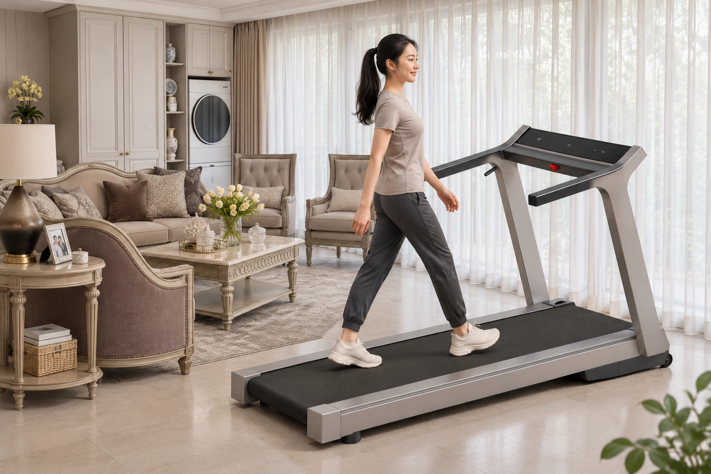
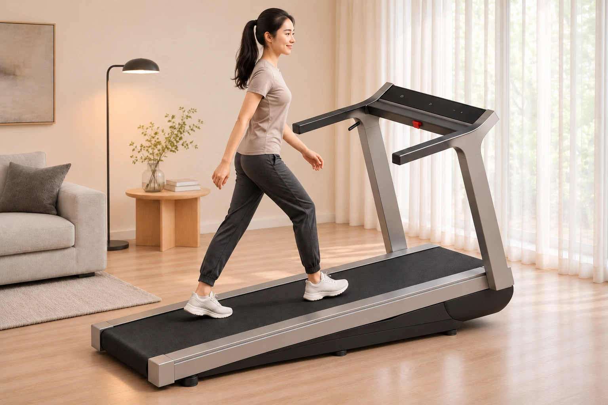
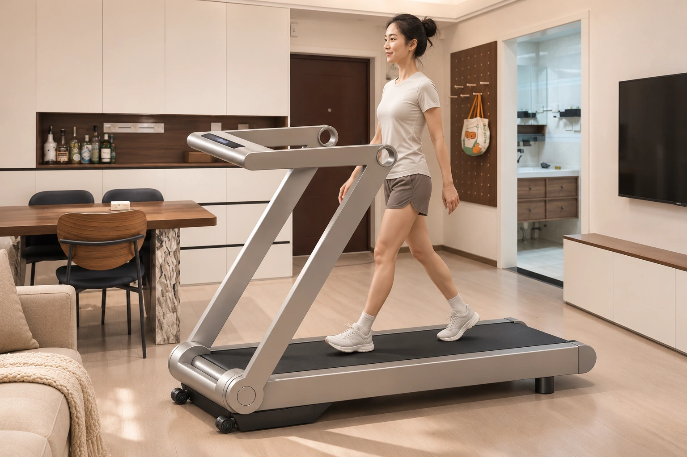
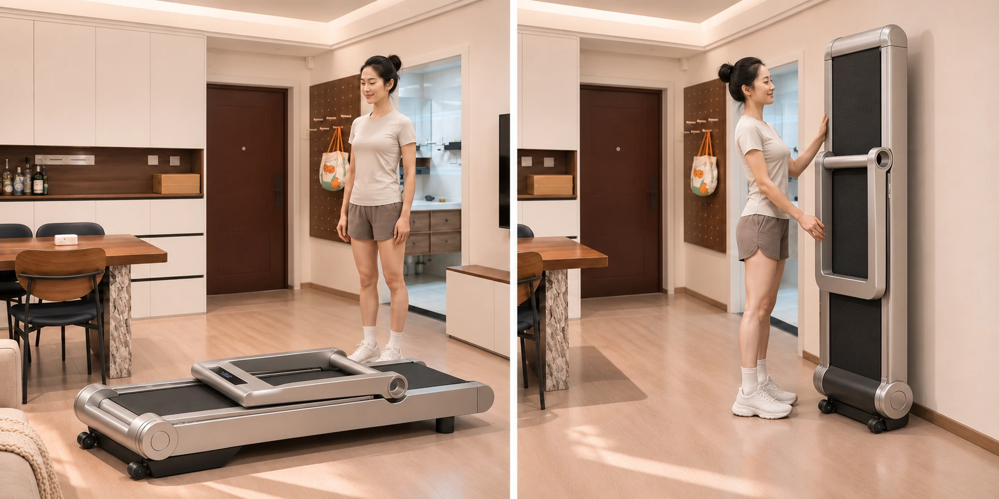
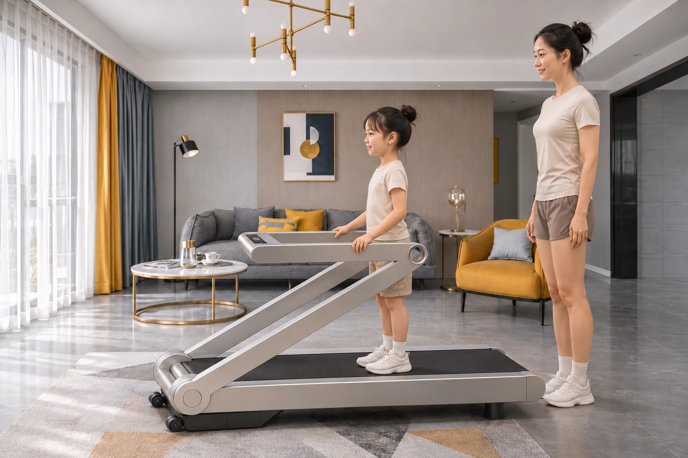
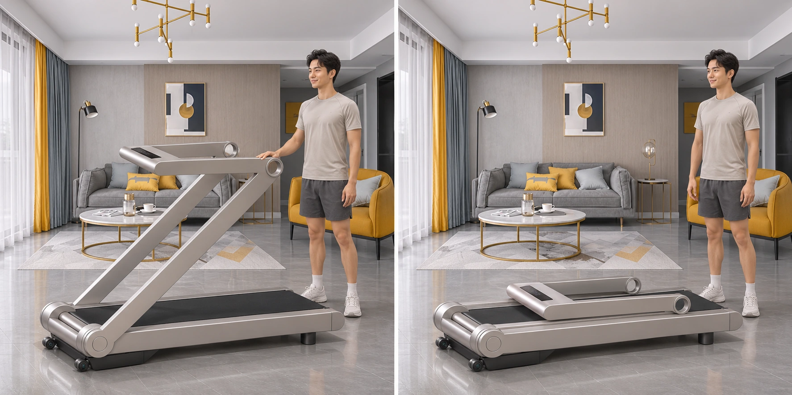
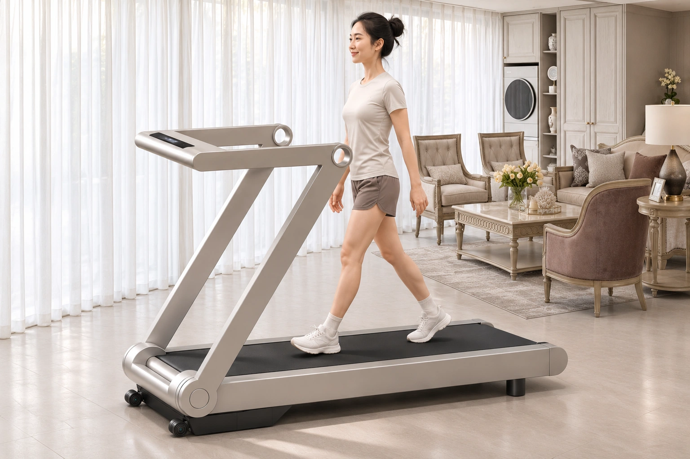
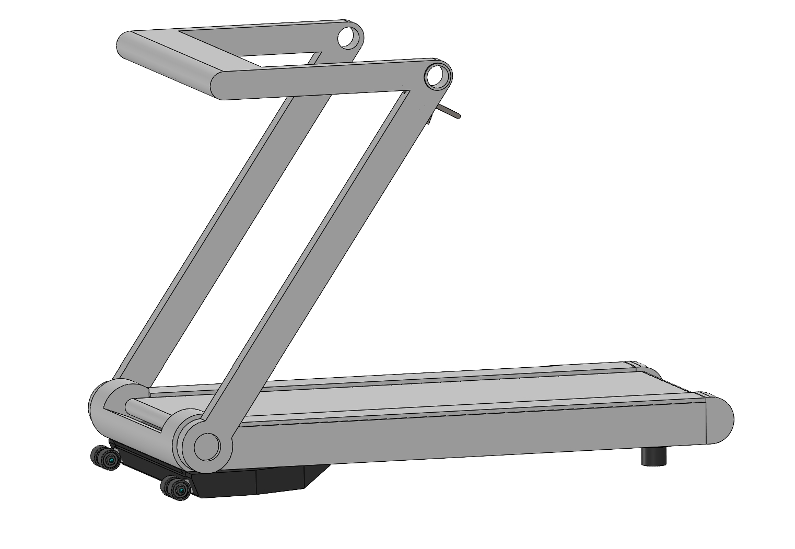

LIJIUJIA · 2026.11.09 · v08
纠错重绘 · 图片直接展开
已删除此前指出错误的图，以下展示重新生成的修订。新图均待验收。
Option 1 · 200㎡使用 · 已确认外观

用户已确认此图外观正确。保留原图。Option 1 · 爬坡饰板包覆 · 待验收

抬升架藏入外观饰板。此修订尚待验收。Option 1：80㎡折平、130㎡收合与200㎡竖放的错误图已删除。扶手自由端的起始翻转方向待明确后重绘；显示屏参与主折叠。
Option 2 · 80㎡ · 成人使用 · 重绘待验收

对照原模型重绘短U形扶手、上部圆孔关节、斜立柱与前端圆形根轴；170cm成人。Option 2 · 80㎡ · 折平与竖放 · 重绘待验收

左：沿原前端根轴收合，短U形扶手绕上部肩轴回收；右：同一折平整机竖起，跑面向室内，扶手保持在跑面侧。成人手扶示意，脚座稳定性待验证。Option 2 · 130㎡ · 儿童低档适配 · 重绘待验收

保持短U形扶手长度，以立柱绕根轴降低、扶手绕肩轴保持水平的姿态提议适配120cm儿童；170cm成人陪同，静态站立。低档锁止为新增提议，尚待工程验证。Option 2 · 130㎡ · 中途收合与折平 · 重绘待验收

前端根轴保持在机头，肩轴随整根立柱运动；短U形扶手与立柱分层回收。170cm成人对照；屏幕收平及关节净距待装配验证。Option 2 · 200㎡ · 成人使用 · 重绘待验收

以同一短U形上架、圆形关节与斜立柱重绘会客区旁的使用状态；170cm成人。住宅案例与尺度口径
沿用原先选用的真实住宅案例氛围。整屋面积不是客厅净尺寸；人物为170cm成人、120cm儿童的视觉近似，折叠与低档锁止仍待装配验证。
原始模型对照
Option 1原模型
 宽扁立柱、连续肩部、短扶手和宽屏。
宽扁立柱、连续肩部、短扶手和宽屏。Option 2原模型

短U形扶手、上部圆孔关节与前端圆形根轴。共享工作区 ↗